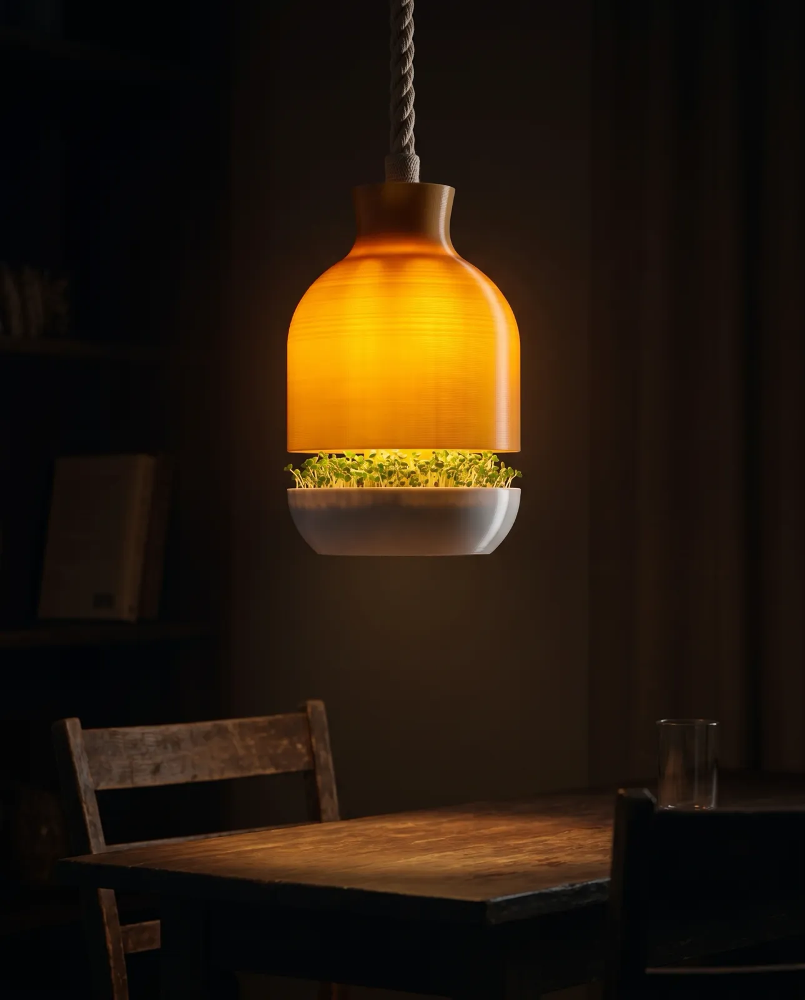

7 Gründe, dein Grün selbst über dem Tisch wachsen zu lassen.
Zieh deine eigenen Microgreens ganz einfach zuhause, ohne Erde, ohne Aufwand. In nur sieben Tagen wachsen sie zu frischem Grün heran, direkt unter einer Lampe, die dein Esszimmer schöner macht.

„So einfach im Alltag: Kokos rein, einmal gießen, ernten. Das Grün schmeckt super frisch, ich streue es fast jeden Tag übers Essen.“
Mara K. · aus dem Lampengrün-Testkreis
Frisch geerntet, nicht quer durch Europa geflogen.
Stell dir vor, du öffnest morgens die Küche und schneidest dein Grün, noch bevor der Kaffee durchläuft. Supermarkt-Microgreens kosten 4 Euro für 30 Gramm und welken nach drei Tagen. Deins steht über dem Tisch und ist immer frisch.

In 2 Minuten startklar, ganz ohne Erde.
Kennst du das Gefühl, wenn in der Küche etwas einfach sauber klickt und funktioniert? Genau so: Kokos-Substrat einlegen, Saatpapier andrücken, einmal gießen, Licht an. Kein Erde-Chaos, kein Gefrickel auf der Fensterbank.

In nur 7 Tagen bereit zur Ernte.
Du greifst zur Schere, ein kurzer Schnitt, und dein Teller sieht aus wie gerade frisch gemacht. Nach dem einmaligen Aufbau übernimmt das System den Rest, und nach sieben Tagen erntest du 60 bis 250 Gramm Grün, direkt aus der Küche.
Auf die Warteliste→Ein Designstück, das abends warm leuchtet.
Du gehst abends in die Küche: warmes Licht, ruhige Stimmung, und Lampengrün glüht golden von innen wie eine kleine Sonne. Kein Bastelprojekt, kein Plastik-Apparat. Eine Lampe, die du sowieso aufhängen würdest, die aber nebenbei Essen wachsen lässt.

Ein Kreislauf statt Verpackungsmüll.
Gedruckt aus pflanzenbasiertem PLA, gewachsen auf Kokos statt Erde, gesät auf plastikfreiem Saatpapier. Keine Pestizide, kein Supermarkt-Plastik, keine App. Du schneidest, säst nach, und es geht wieder von vorn los.
Nachfüllpakete ansehen→
Microgreens sind von Natur aus kleine Kraftpakete.
Junge Microgreens stecken voller Geschmack und Farbe, und sie bringen das mit, was junge Pflanzen eben mitbringen. Frisch, unverarbeitet, direkt geschnitten. Erbse, Sonnenblume, Rettich: jede Sorte schmeckt anders, alle landen frisch auf dem Teller.
Ehrlich produziert, in kleiner Auflage.
Wir produzieren 30 Lampen pro Monat, mehr schaffen wir gerade nicht. Keine Eile-Tricks, kein Rabatt-Theater. Du trägst dich auf die Warteliste ein, und sobald eine Lampe für dich fertig ist, bekommst du deinen persönlichen Bestell-Link. Dazu 90 Tage Garantie.
Platz sichern→
Sichere dir deine Lampe.
Trag dich ein, und sobald eine Lampe für dich fertig ist, bekommst du deinen persönlichen Bestell-Link.